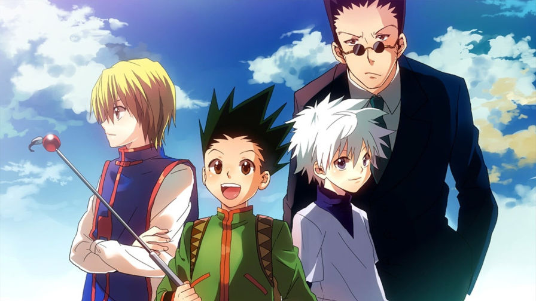
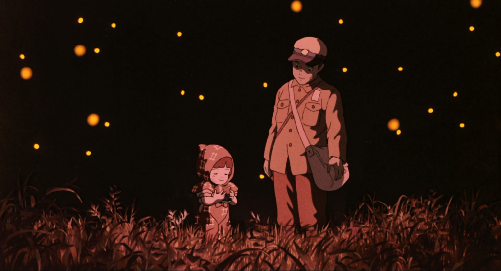
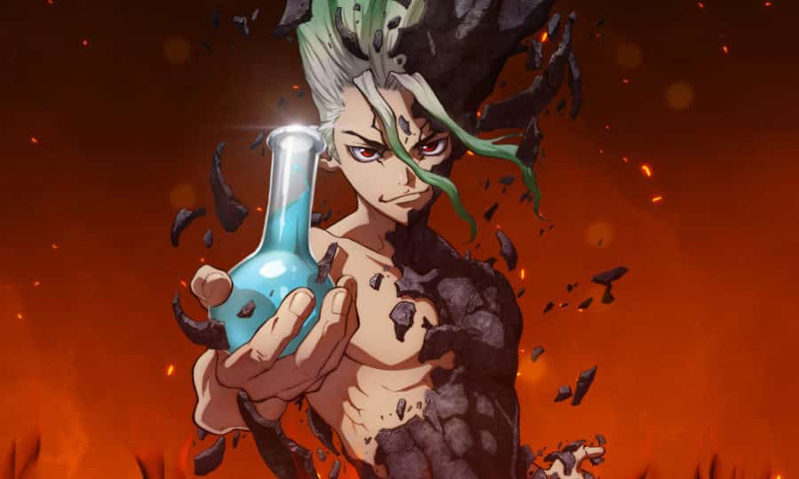

ANIME
Um dos meu passatempos favoritos é assistir anime. Confira a tier list dos meus cinco animes preferidos:
- One Piece
- Hunter x Hunter 
- O Túmulo dos Vagalumes 
- Dr. Stone 
- One Punch Man

Basicamente, esse anime foca, sobretudo, na trama do pirata Monkey D. Luffy e seu grupo, os “Piratas do Chapéu de Palha”. Assim, o objetivo do jovem é encontrar o One Piece e se tornar o Rei dos Piratas.
Além do mais, esse anime conta com uma mitologia que contém diversas raças. Por exemplo, os sereianos, anões, gigantes, e outras criaturas bizarras que habitam os vários mares descritos no anime.
A história conta sobre o universo criado por Yoshihiro Togashi, o qual é muito rico.
Ele possui um sistema de magia único que é através do uso do Nen, ou seja, a energia da própria aura, e também possui uma mitologia bastante característica.
Uma curiosidade sobre esse anime é que cada arco é como se fosse um anime à parte, com temáticas diferentes e inclusão de personagens exclusivos. Portanto, mesmo que você esteja acompanhando a trajetória de Gon Freecss, que é o protagonista, e seus amigos em busca de descobrir o que é ser um Hunter, o enredo não é totalmente fechado nesse núcleo.
Os irmão Setsuko e Seita vivem no Japão em meio a Segunda Guerra Mundial. Após a morte da mãe em um bombardeio e a convocação do pai para a Guerra, eles vão morar com alguns parentes. Insatisfeitos, saem da cidade e acabam em um abrigo na floresta.
Milhares de anos após um misterioso fenômeno transformar a humanidade inteira em pedra, desperta um garoto extraordinariamente inteligente e motivado pela ciência - Senku Ishigami. Diante de um mundo de pedra e do colapso generalizado da civilização, Senku decide usar sua mente para reconstruir o mundo. Ao lado de Taiju Oki, seu amigo de infância absurdamente forte, eles começam a reestabelecer a civilização do zero...

Esse anime de 2015 conta a história de Saitama, um jovem que inicia um intenso treinamento com o objetivo de se tornar o super-herói mais forte do mundo. Nesse sentido, ele não só tenta como também consegue.
Aliás, ele se mostrou capaz de derrotar os seus inimigos com apenas um único soco.